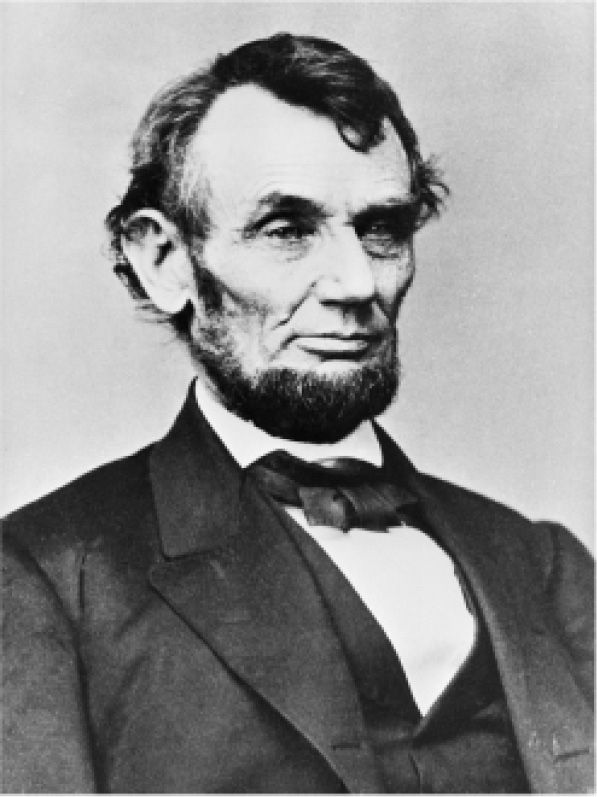

（亚伯拉罕·林肯于葛底斯堡，1863年11月）
（安德鲁·卡内基，《胜利的民主：共和国的五十年进军》，1887年）

图8 亚伯拉罕·林肯（1809—1865）肖像习作，马修·布雷迪绘于1863年
葛底斯堡演说是献给在最近的战场上建立的国家公墓的，当时内战尚未结束，这段话试图把《独立宣言》中所包含的自由观念以及宽泛的多数主义民主观念“民有、民治”，统一进美国人的政治意识，使其变得神圣。林肯故意将《独立宣言》在道德上置于宪法之先，毕竟宪法没有提到平等，而且容忍奴隶制。反对废奴的联邦主义者愤怒地抗议说，总统在这次面向人民的演说中绕过了宪法，一如他在解放奴隶的宣言中所做的。但是，战争有时是社会变革的加速器，能强化共同的价值观。当首席大法官在战争伊始抗议林肯通过总统令把电报公司收归国有时，林肯曾说，坦尼应该在战争结束后把他的人派过来和自己的人谈谈。民主国家必须自卫。
到1850年代至1870年代中期，美国的例子表明（实际上仅仅它的存在就表明）民主是可能的，它正是个人自由和平民权力的这种混合，即便是在一个大陆国家，而不再是在拥有广阔腹地的城市。美国内战爆发时，欧洲各地的保守主义者曾放言“告诉你吧”，民主会导致无政府状态，正如他们通过研究经典作品和法国大革命所得出的那样。但是，北方的胜利、奴隶的解放、北方工业的经济实力、由国民构成的军队的爱国主义以及林肯的言辞给了他们答案。卡内基这本书的书名当然会提醒他们，民主的资本主义社会已经胜过了种植园主们的农业式“棉业集团”。
当载着移民的船进入纽约港时，首先迎候他们的是自由女神像，上面镌刻着：
卡内基是对的。在他迁移到“自由之地”后，祖国仍然没有给他选举权，实际上他的父亲由于要求“一人一票”、每年召开议会和实行无记名投票，一直作为宪章派煽动者被监禁于苏格兰。美国体现了民主的原则，正如在20世纪的大部分时间俄国将要体现共产主义社会原则一样。难怪19世纪的哈布斯堡帝国和罗曼诺夫帝国都禁止教授美国历史。